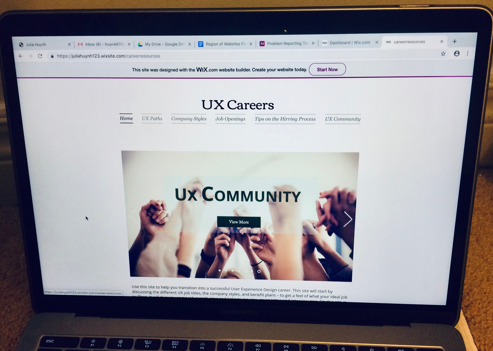

This website aims to help decrease stress in finding a career job in user experience. It is often very stressful to switch into a new career and this website should ease the stress. The target audience includes recent graduates in the UX field and people who want to transfer into a UX career.
Direct and indirect competitors were looked at. Through a SWOT analysis, it was found that there are currently many websites and blogs about careers in UX. However, there were no full websites strictly about transitioning into a UX job. Indirect competitors such as books, events/workshops, and guidance counselors were also looked at. A threat of indirect competitors is that they appear more trustworthy than a website from the internet. However, an opportunity to a website is that it is much more convenient. This finding comfirmed that there was room for a website on this topic. Moving forward, user interviews were conducted to gain a better understanding of the users. From the interview, it was identified that participants found it hard to find facts that are specific and correct. Users also found it hard to sort through different job titles. Emotions users went through when looking for a job included stress, stupid, worthless, lost, anxious, overwhelmed and competitive. Moreover, most people said that they went online to gather information and that pamphlets were tedious. Users also stated that they would spend 15-20 mins before they stopped looking if they could not find what they were looking for. Personas and experience maps were created after gathering information from user interviews.
After creating the personas and experience maps, the ideation stage began. Task flows, site maps, and wireframes were sketched out to brainstorm ideas. Mobile and desktop was considered. A card sort was also conducted to help form the information architecture.
Next, a paper prototype of wireframes was created and tested. Users were presented wireframes of different layout ideas asked what they thought of each page layout. The titles were also discussed.
During the testing of the wireframes, a key issue found was the comment page. Everyone thought that the purpose of the comment page was not very clear. To solve this issue, the title was changed to 'UX Community' and a description under the title was added. A few layout adjustments were also made. A high-fidelity prototype incorporating the changes was then produced on Wix. The prototype was then tested using a cognitive walkthrough approach. During this testing, it was found that some of the subpages were hard to find. To solve this some of the subpages were changed to become a main page. Overall, the participants thought it was relativity easy to get around the website and liked the overall feel. Lastly, after the changes, the prototype was tested once more. The results of the test went well. And the website is now ready!